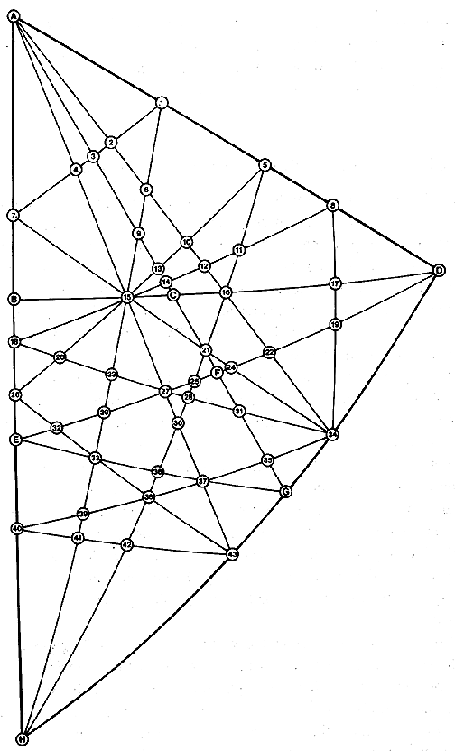

|  |
| Fig. 1132.01C Net Diagram of Angles and Edges for Basic Equilibrium 48 LCD Triangle in VE-icosa Grid: This is a coded detail of the basic spherical triangle shown shaded in Fig. 1132.01B and at Fig. 453.01. It is the key to the trigonometry tables for the spherical central angles, the spherical face angles, the planar edge lengths, and the planar face angles presented at Table 1132.01D. (The drawing shows the spherical phase: angle and edge ratios are given for both spherical and planar VE.) |